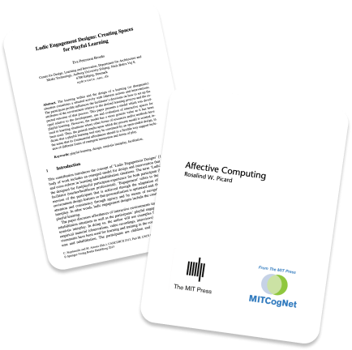
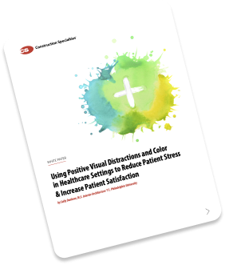

Design
Repository
We are bound to face stress and anxiety when faced with illnesses. But when visiting hospitals, the negative emotions are heightened due to being unsure of what’s to come. It doesn’t help that the environment we’re forced to wait in is often sterile, increasing our emotional unrest. How can we as designers promote a space of healing when hospitals are limited to their current structures, daily regiments and limited budgets?
  Read More